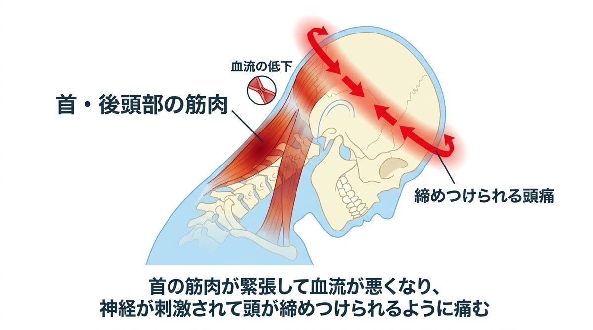
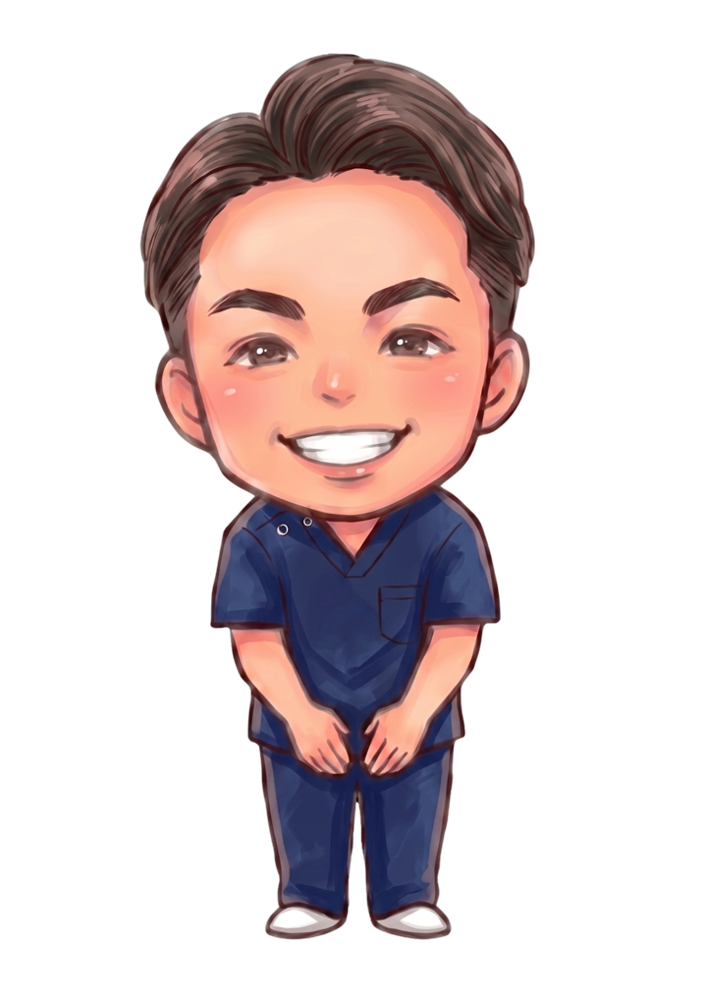
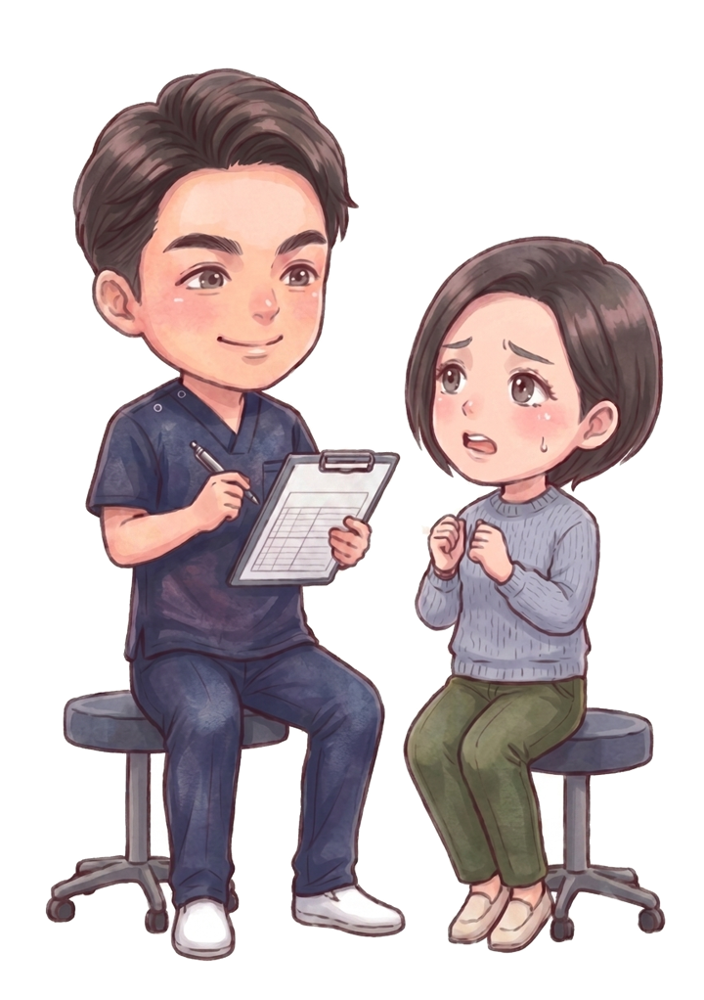
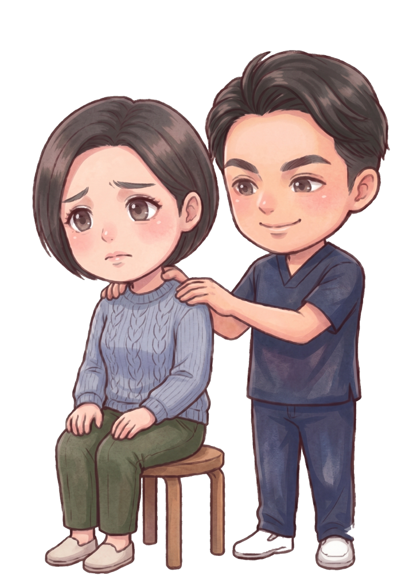
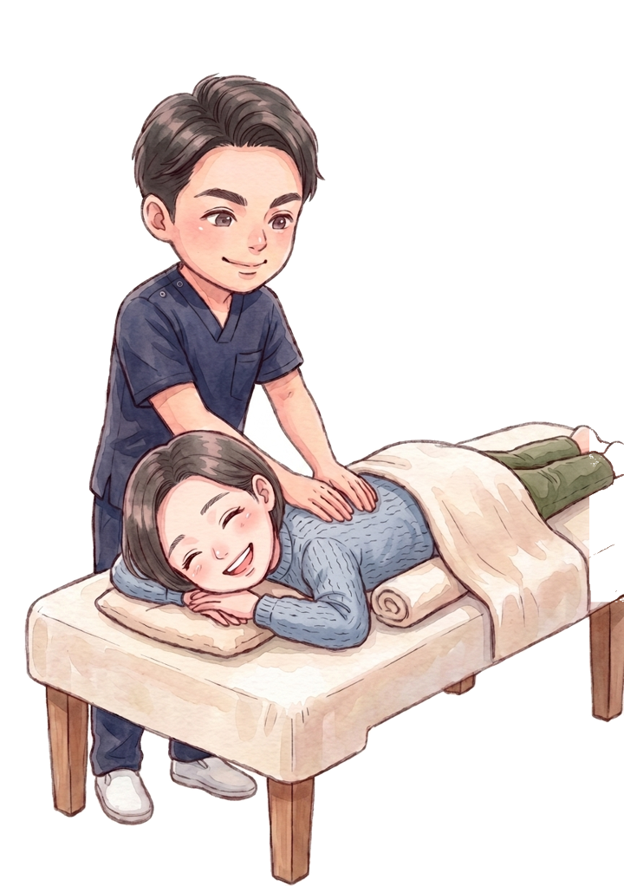

バッグにいつも頭痛薬。その頭痛、実は「首と肩」から来ているかもしれません。原因からケアすれば、薬に頼る回数は減らせます。
検査で異常がないのに繰り返す頭痛の多くは、首・肩の筋肉の緊張からくる「緊張型頭痛」。日本人に最も多いタイプの頭痛で、姿勢と筋肉へのアプローチで改善が期待できます。
緊張型頭痛のメカニズムはシンプルです。首から後頭部にかけての筋肉が硬く緊張すると、頭へ向かう血流が悪くなり、神経が刺激されて痛みが出ます。頭を締めつけられるような鈍い痛みが特徴で、「ヘルメットをかぶっているみたい」と表現される方もいます。
ではなぜ首の筋肉が緊張するのか。犯人はうつむき姿勢と猫背です。体重の約10%もある頭が前に傾くほど、それを引き留める首の後ろの筋肉はフル稼働に。スマホを見る・PC作業をする・家事をする——現代の生活は、首に残業を強いる姿勢であふれています。


首の筋肉が頑張らされる根本原因は、頭を前に突き出させる姿勢＝猫背と骨盤の後傾にあります。だからこそ、首のマッサージだけでは数日で元通り。土台から整える必要があるのです。
当院が行うのは、①硬くなった首・肩・後頭部の筋肉を丁寧にゆるめて血流を回復させること、②頭が前に出る姿勢を猫背矯正・骨盤矯正で土台から整えること、③スマホの持ち方や枕などの生活習慣を見直すこと。この3つで「頭痛が起きにくい身体」をつくっていきます。

痛み方・頻度・出るタイミングを丁寧に伺い、施術で対応できる頭痛かどうかをまず見極めます。医療機関の受診が必要な場合は正直にお伝えします。

頭の位置・首のカーブ・肩甲骨の動きをチェックし、あなたの頭痛を起こしている緊張ポイントを特定します。

首・肩・後頭部の筋肉をゆるめ、猫背矯正で姿勢から整えます。枕・スマホ姿勢など、頭痛を遠ざける生活のコツもお伝えします。
首・肩のこりや姿勢の崩れからくる「緊張型頭痛」は、筋肉と姿勢へのアプローチで改善が期待できます。突然の激しい頭痛や、しびれ・吐き気を伴う頭痛は病気が隠れている場合があるため、まず医療機関の受診をおすすめします。
月に10日以上痛み止めを飲む状態が続くと、薬の使いすぎ自体が頭痛を招く「薬物乱用頭痛」につながることが知られています。薬の回数が増えてきた方こそ、原因のケアを早めに始めることをおすすめします。
いいえ。頭痛の施術では首まわりの筋肉を丁寧にゆるめ、姿勢の土台から整えるソフトな施術が中心です。刺激の強い施術が苦手な方も安心してお越しください。